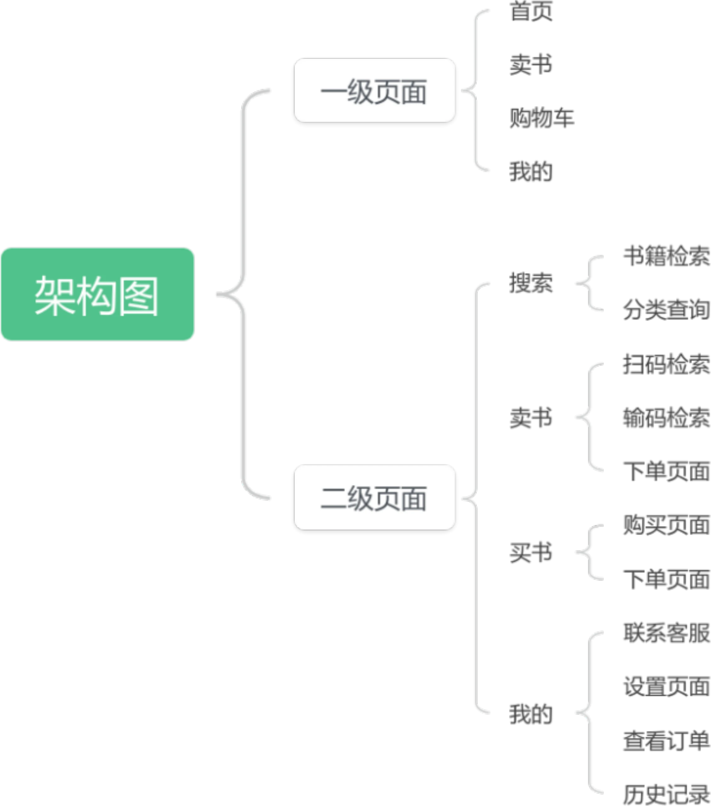
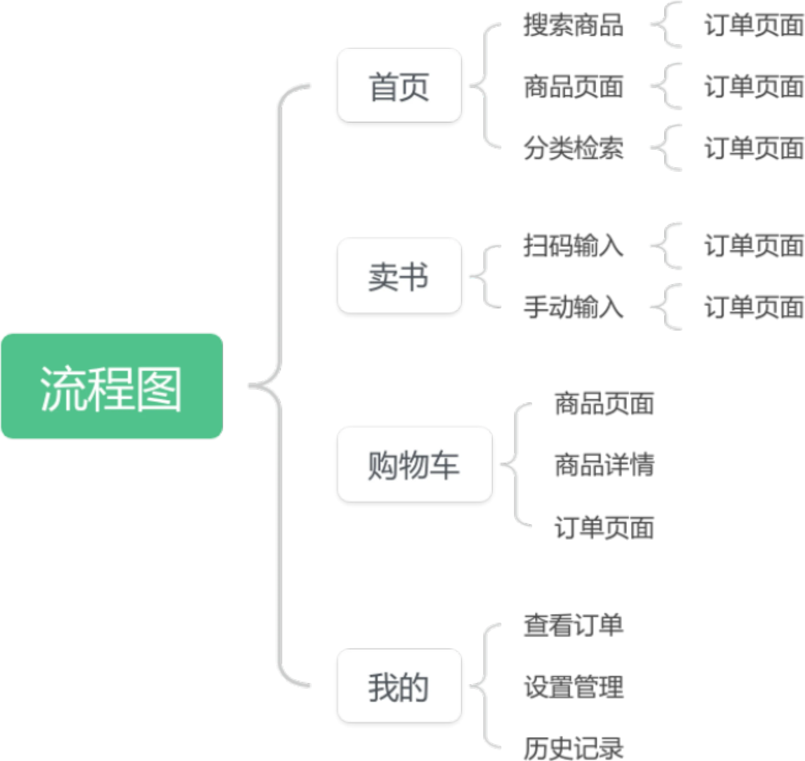
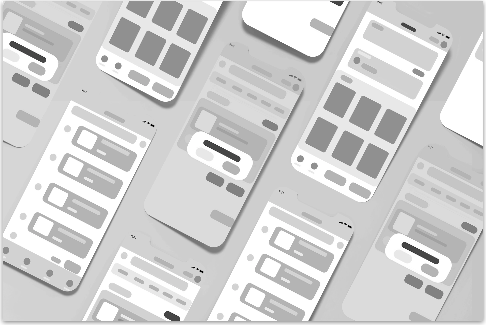
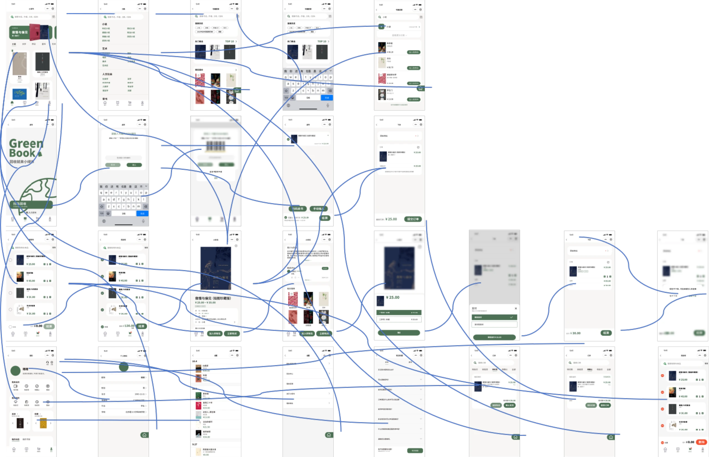
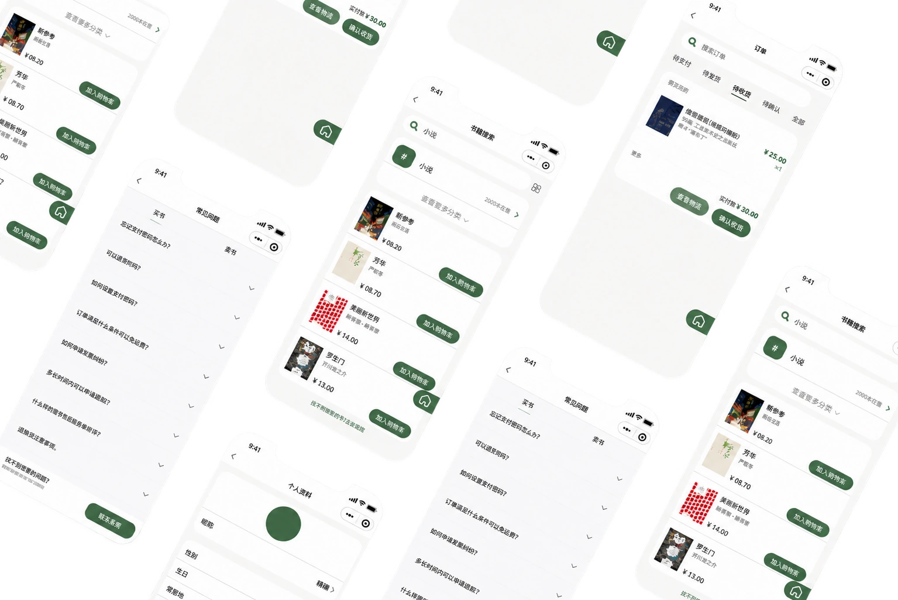
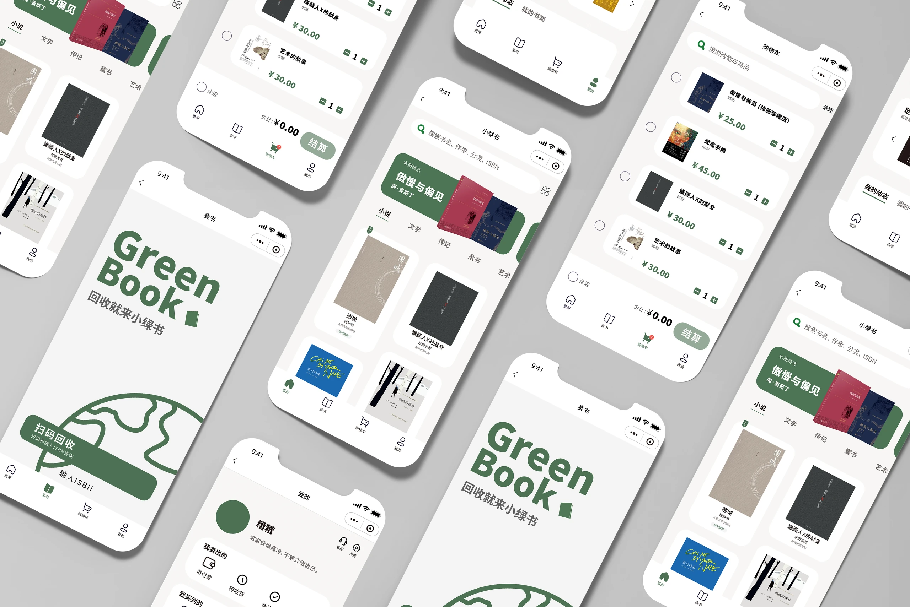

PROJECT DETAIL / 05
GREEN
BOOK
GREEN BOOK · UI / UX DESIGN
主题 / THEME
绿书小程序 / 二手图书循环流通
作者 / AUTHOR
冯健钊、程楷然、钟锡汉
指导老师：刘为
项目说明 / DESCRIPTION
围绕找书、买书、卖书、订单与个人中心设计小程序界面，以清新绿色和清晰的交易状态，呈现图书交换与再利用的使用路径。
绿书小程序 / 二手图书循环流通
冯健钊、程楷然、钟锡汉
指导老师：刘为
围绕找书、买书、卖书、订单与个人中心设计小程序界面，以清新绿色和清晰的交易状态，呈现图书交换与再利用的使用路径。
“小绿书 / GREEN BOOK”是一款二手书交易小程序的界面设计方案。以知识共享和图书再利用为主题，围绕图书发布、在线下单、订单管理以及搜索浏览，设计买卖双方的操作路径。
方案还包含分类筛选、浏览记录、评价评分，以及多种支付方式和按书籍成色提供价格建议等功能设想。这些内容属于设计方案，不代表已上线的服务。
以首页、卖书、购物车和我的四个一级入口组织功能，再展开搜索、分类、扫码或手动输入 ISBN、订单管理、客服与历史记录等二级页面。


PPT 展示了灰度低保真界面以及带连接线的页面流程。低保真以模块区分书籍列表、分类与操作区，页面连接图说明各入口与交易页面之间的跳转关系。


将绿色品牌识别应用于按钮、图标状态及界面重点区域，形成买书、卖书和订单管理等高保真页面，再通过样机呈现完整界面系统。
Logo 以书本图标表达知识和资源共享，绿色呼应环保主题，圆润的手写风格字标传递亲切感。方案以 #4C7154 为主要绿色，并标注 #F7502F 等辅助色及部分元素的 60% 透明度设置。
设计参考 iOS 与 iPhone X，以 375 × 812 px 为逻辑画布，对应 1125 × 2436 px 的像素分辨率。图标未选中时使用线性形式，选中后转为面性图标并呈现绿色状态反馈。
搜索栏置顶，分类入口帮助用户按类别浏览。推荐书籍采用可左右滑动的大图展示，书籍列表集中呈现信息。底部四个导航入口提供稳定的功能切换路径。
资料未记录具体迭代困难与用户测试结果。以下整理的是 PPT 中已有的交互应对设计。
加入购物车时弹出成色与价格选择，让用户先明确购买规格，再进入结算。
提供条形码扫描和手动输入 ISBN 两种入口。查询成功后进入下一页面，查询不到时使用弹窗提示。
购物车选中商品后，圆形选择按钮变绿，同时结算按钮转为绿色可点击状态。管理入口支持批量删除或单本操作。
方案在离开下单页面时提供提醒和继续下单选项。是否能改善完成率仍需验证，也应在后续测试中检查提醒是否打扰用户。

